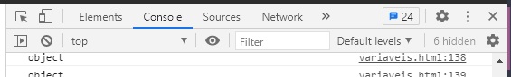

Skip to content Search or jump to… Pull requests Issues Marketplace Explore @Carlos-Alexandre-Leutz Carlos-Alexandre-Leutz / Curso-de-js-variaveis 1 00 Code Issues Pull requests Actions Projects Wiki Security Insights Settings Curso-de-js-variaveis/variaveis.html
@Carlos-Alexandre-Leutz Carlos-Alexandre-Leutz Update variaveis.html Latest commit 58a0aeb 7 days ago History 1 contributor 252 lines (183 sloc) 7.19 KB
variáveis
Curso de JavaScript
Configurando ambiente
Inscreva-se
Para abrir o console aperte botão direito do mause + inspecionar
Depois clique no console

ola